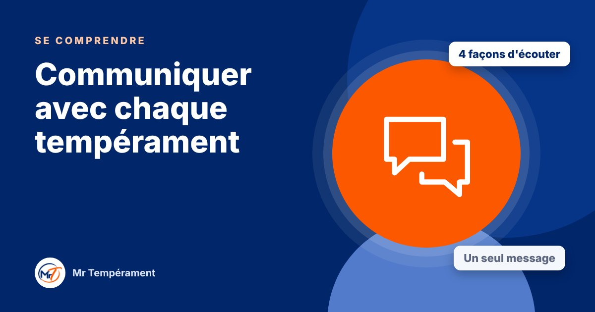

Communiquer avec chaque tempérament

Le même message peut être reçu de quatre façons différentes. Voici comment parler à chacun pour être vraiment entendu.
Vous avez déjà eu l'impression de dire exactement la bonne chose, et de ne pas être compris ? Souvent, le problème n'est pas le message, mais la manière de le transmettre. Chaque tempérament écoute différemment. Adapter quelques mots, un ton ou un moment suffit parfois à changer l'issue d'une conversation.
Avec un Dominant : court, direct, orienté résultat
Allez à l'essentiel. Commencez par la conclusion, puis donnez les raisons si on vous les demande. Proposez des solutions plutôt que des plaintes, et laissez-lui le choix entre deux options. Évitez de tourner autour du sujet : il peut y voir un manque de clarté ou de confiance en vous.
Avec un Influent : chaleureux, vivant, humain
Prenez un moment pour la relation avant d'entrer dans le sujet. Montrez de l'enthousiasme, laissez-lui la parole, reformulez ce qu'il vient de dire. Si vous devez lui demander un suivi, faites-le avec bienveillance et par écrit en plus, pour que rien ne se perde.
Avec un Stable : calme, progressif, rassurant
Annoncez le sujet à l'avance, parlez sans presser, et laissez des silences. Posez des questions ouvertes et précises, car il parle peu spontanément de ce qui le gêne. Évitez les changements de dernière minute : prévenez-le, expliquez-lui pourquoi, et donnez-lui le temps de s'adapter.
Avec un Consciencieux : précis, factuel, respectueux
Donnez des informations fiables, des exemples concrets et le temps de réfléchir. Évitez les généralités et les critiques personnelles. S'il se tait, ne forcez pas : proposez de reprendre la discussion plus tard. Remerciez avant de corriger, il sera beaucoup plus ouvert.
Et si vous ne savez pas son tempérament ?
Observez. Parle-t-il vite ou lentement ? Va-t-il droit au but ou prend-il le temps ? Parle-t-il d'abord des faits ou des personnes ? Ces indices donnent une première idée. Et en cas de doute, une question simple suffit : « Comment préférez-vous que nous en parlions ? »
Ces repères sont des tendances. Une personne réelle est toujours plus nuancée qu'un tempérament : servez-vous-en comme d'une boussole, pas comme d'un verdict.
Pour aller plus loin
Le Bilan DISC Miroir révèle votre style naturel et votre style adapté, votre super-pouvoir et votre point faible principal.
Découvrir le Bilan Miroir